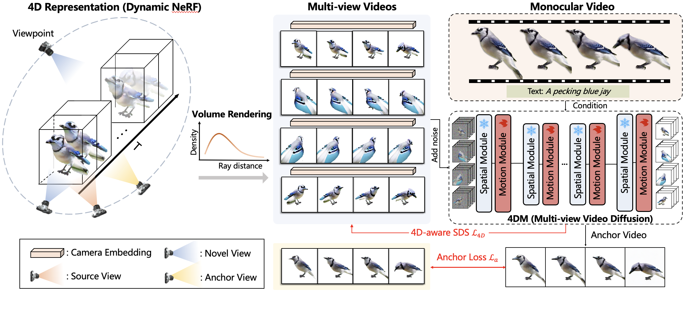

Video-to-4D Generation
We compare 4Diffusion to 4D-fy, Consistent4D, and DreamGaussian4D on monocular video-to-4D task. 4Diffusion generates high-quality 4D content with our multi-view video diffusion model 4DM.
Current 4D generation methods have achieved noteworthy efficacy with the aid of advanced diffusion generative models. However, these methods lack multi-view spatial-temporal modeling and encounter challenges in integrating diverse prior knowledge from multiple diffusion models, resulting in inconsistent temporal appearance and flickers. In this paper, we propose a novel 4D generation pipeline, namely 4Diffusion, aimed at generating spatial-temporally consistent 4D content from a monocular video. We first design a unified diffusion model tailored for multi-view video generation by incorporating a learnable motion module into a frozen 3D-aware diffusion model to capture multi-view spatial-temporal correlations. After training on a curated dataset, our diffusion model acquires reasonable temporal consistency and inherently preserves the generalizability and spatial consistency of the 3D-aware diffusion model. Subsequently, we propose 4D-aware Score Distillation Sampling loss, which is based on our multi-view video diffusion model, to optimize 4D representation parameterized by dynamic NeRF. This aims to eliminate discrepancies arising from multiple diffusion models, allowing for generating spatial-temporally consistent 4D content. Moreover, we devise an anchor loss to enhance the appearance details and facilitate the learning of dynamic NeRF. Extensive qualitative and quantitative experiments demonstrate that our method achieves superior performance compared to previous methods.
Our method first trains a unified diffusion, named 4DM, by inserting a learnable motion module at the end of each frozen spatial module of ImageDream to capture multi-view spatial-temporal correlations. Given a monocular video and text prompt, 4DM can produce consistent multi-view videos. Then, we combine 4D-aware SDS and an anchor loss based on 4DM to optimize 4D representation parameterized by Dynamic NeRF.
We compare 4Diffusion to 4D-fy, Consistent4D, and DreamGaussian4D on monocular video-to-4D task. 4Diffusion generates high-quality 4D content with our multi-view video diffusion model 4DM.
Our multi-view video diffusion model 4DM captures multi-view spatial-temporal correlations, facilitating the generation of multi-view videos.
@article{zhang20244diffusion,
title={4Diffusion: Multi-view Video Diffusion Model for 4D Generation},
author={Haiyu Zhang and Xinyuan Chen and Yaohui Wang and Xihui Liu and Yunhong Wang and Yu Qiao},
year={2024}
}